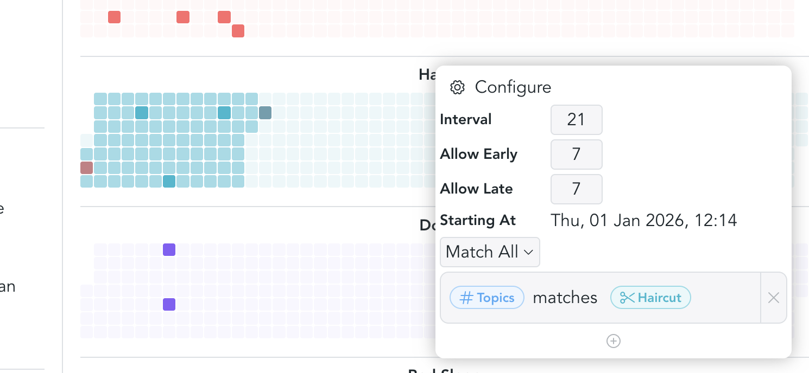
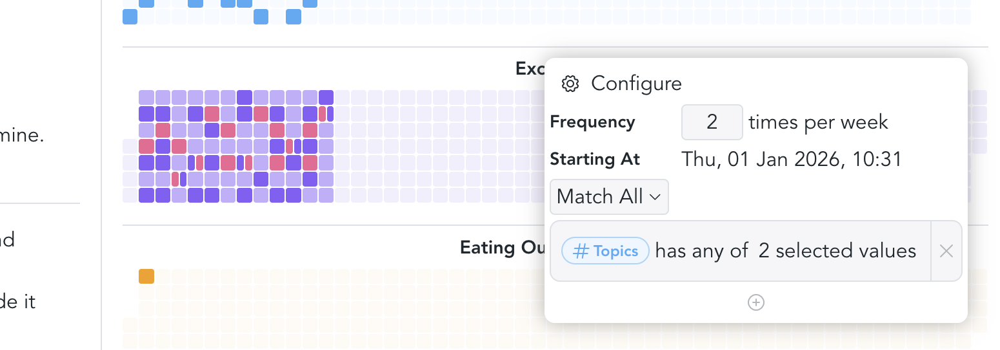
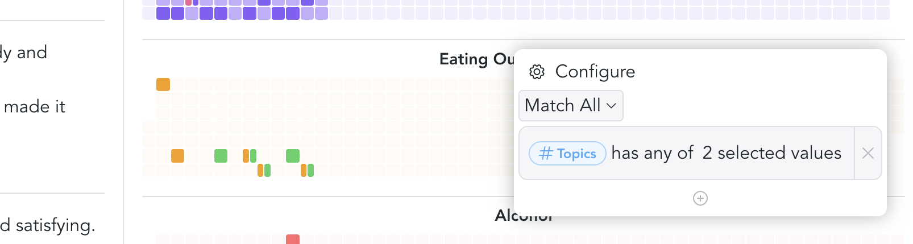
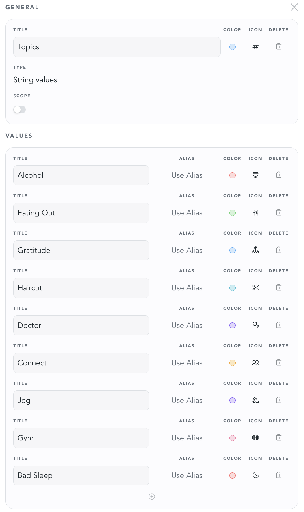

Visualizations let you see how specific attributes appear over time. They are especially useful for habits, routines, recurring activities, and life events that you want to track visually rather than through a plain list.
To create a visualization, open a dashboard, click the plus button, and select
Create Visualization.
Visualizations work by filtering snippets based on one or more attributes. Once configured, they give you an immediate overview of patterns and progress.
There are currently three visualization types.
Interval
Interval visualizations are useful for things you do on a recurring cadence, but not on fixed calendar dates.
A simple example is getting a haircut. If you usually get one every three weeks,
you can tag the corresponding notes with an attribute such as Haircut. The
visualization then helps you see when the last occurrence happened and when the
next one is roughly due.
Example configuration:
- Interval:
21 days - Allow early:
7 days - Allow late:
7 days - Start date: choose any date that makes sense for your tracking period
- Filter: select the attribute, or a specific value if the attribute has multiple possible values

Frequency
Frequency visualizations are best for activities you want to do a certain number of times within a period.
For example, you might want to go jogging or to the gym at least twice per week. In that case, the important question is not the exact spacing between events, but whether you reached your target frequency.
Example configuration:
- Frequency:
2 - Start date: choose the date from which tracking should begin
- Filter: select one or more attributes
If you configure multiple filters, they are displayed in their respective colors so you can compare them at a glance.

Events
Event visualizations are the simplest option. They are useful for things that happen occasionally and do not need a target interval or frequency.
For example, you might want to keep track of events such as eating out, attending concerts, or meeting friends. In these cases, it is often enough to see when something happened, without measuring whether you are "on schedule."
To configure an event visualization, simply choose the attributes you want to display.

Example schema
Here's what the respective attribute schema could look like. It is of type String Values, has a title "Topics", and multiple values that can be used for tracking. Every value can be configured with a custom color and icon.
